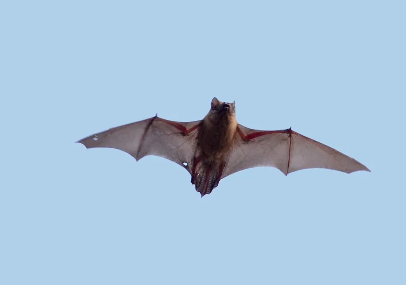
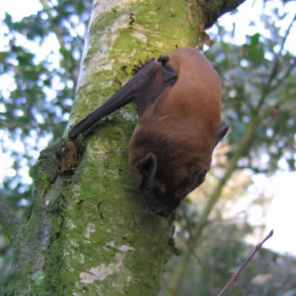
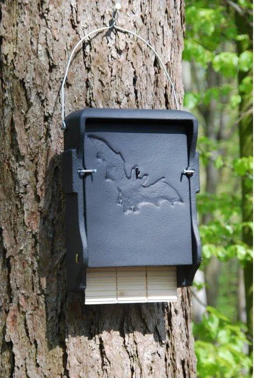

Waarom vleermuizen belangrijk zijn
Elke zomeravond, als de zwaluwen gaan slapen, nemen de vleermuizen het over. Ze vliegen op hun gehoor: met ultrasone roepjes die wij niet horen, zien ze in het pikkedonker een mug op meters afstand. Eén vleermuis eet per nacht honderden tot duizenden insecten: muggen, motten, kevers. Ze zijn daarmee de nachtploeg van de natuurlijke plaagbestrijding, zoals zwaluwen dat overdag zijn.
Nederland telt achttien soorten vleermuizen, allemaal beschermd. Ze zijn de enige zoogdieren die echt kunnen vliegen, ze kunnen twintig tot dertig jaar oud worden en een vrouwtje krijgt meestal maar één jong per jaar. Daardoor herstelt een populatie zich langzaam als het misgaat. En het gaat vaak mis: oude holle bomen verdwijnen, gebouwen worden dichtgemaakt en de nachten worden steeds lichter.
En ongevaarlijk? Absoluut. Vleermuizen vallen mensen niet aan, vliegen niet in je haar en drinken geen bloed. Het enige wat ze van je willen, is een donkere avond en genoeg insecten.

Wie wonen er bij ons?
Vleermuisspecialiste Carola van den Tempel kwam bij ons op bezoek om te kijken welke soorten er in en om Ankeveen leven en wat we voor ze kunnen doen. Rond de plassen, het riet en de oude bomen jagen onder andere de gewone dwergvleermuis, de laatvlieger, de watervleermuis, die vlak boven het water insecten van het oppervlak plukt, en de rosse vleermuis.
De rosse vleermuis
De rosse vleermuis is een van onze grootste soorten, met een spanwijdte van bijna veertig centimeter en een roodbruine vacht. Hij vliegt hoog, snel en vroeg, vaak al voor zonsondergang, zodat je hem met wat geluk gewoon kunt zien jagen boven de plassen, tussen de eerste gierzwaluwen. Hij woont het liefst in holle bomen, bij voorkeur in oude spechtenholen. En daar zit het probleem: in Ankeveen staan niet zoveel oude, holle bomen meer. Een vleermuiskast is dan een welkom alternatief, een kunstmatige boomholte hoog aan de stam.

Wat we doen
Dankzij een bijdrage van de Nationale Postcode Loterij hebben we een aantal vleermuiskasten kunnen aanschaffen. Op zaterdag 7 november 2026, tijdens de Natuurwerkdag, hangen we ze op, op plekken die Carola heeft aangewezen: hoog, vrij aan te vliegen en uit de wind. Daarna is het wachten. Vleermuizen ontdekken een nieuwe kast soms in het eerste jaar, soms pas na een paar jaar. We houden ze in de gaten.

Zelf iets doen? Laat je tuin ’s avonds donker, plant nachtbloeiende en insectenrijke planten zoals kamperfoelie, teunisbloem en lavendel, en laat holle bomen en spouwmuren met rust als daar vleermuizen in zitten.
← Alle projecten